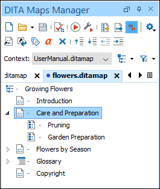
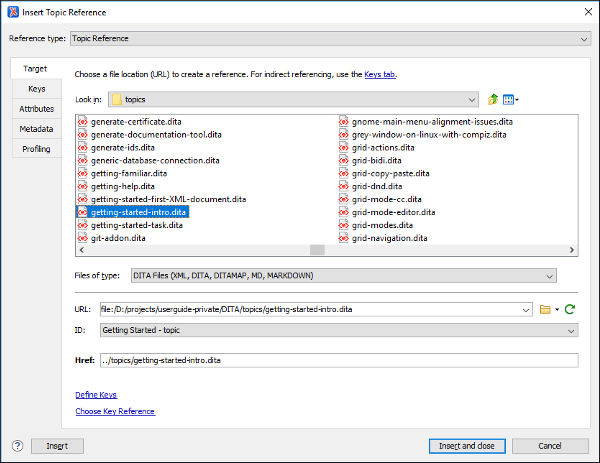

Getting Started with DITA
The information in this topic is meant to be a very basic starting point for those who are just getting started using DITA in Oxygen XML Author. Oxygen XML Author makes it easy to create, edit, manage, and publish DITA content, but it requires at least some basic DITA knowledge. To truly get the most out of Oxygen XML Author and all of its DITA-related features, you should explore resources in the online DITA community to acquire knowledge of its concepts and uses.
Understanding DITA Topics
It is important to understand the role that a DITA topic plays in a DITA project. A DITA topic is not associated with a single published document. It is a separate entity that can potentially be included in many different books, help systems, or websites. Therefore, when you write a DITA topic you are not writing a book, a help system, or a website. You are writing an individual piece of content. This affects how you approach the writing task and how Oxygen XML Author works to support you as you write.
Most of your topics are actually related to other topics, and those relationships can affect how you write and handle things such as links and content reuse. Oxygen XML Author helps you manage those relationships. Depending on how your topics are related, you can use the tools provided in Oxygen XML Author, along with the features of DITA, in a variety of ways.
Creating a DITA Topic in Oxygen XML Author
-
Select File >
 New or click the New button on the
toolbar.
New or click the New button on the
toolbar.Step Result: The New Document Wizard is displayed:
Figure 1. New DITA Document Wizard 
- Go to and select the type of topic that you want to create.Note: If your organization has created DITA customizations, the appropriate template files may be in another location, and various types of topics may be provided for your use. Check with the person who manages your DITA system to see if you should be using templates from another directory.
- Select a file path where it will be saved. You can also optionally specify a title.
- Click Create.
Result: Your document is opened in the editor. Eventually, you will need to add a reference to it in your DITA map.
Your DITA topic is an XML document, thus all the editing features that Oxygen XML Author provides for editing XML documents also apply to DITA topics. Oxygen XML Author also provides additional specific DITA-related support for working with DITA topics, their associated DITA maps, and for creating DITA output.
Role of Maps
The basic method that DITA uses to express the relationship between topics is through a DITA map. Other relationships between topics, such as cross references, generally need to be made between topics in the same root map. DITA uses maps to determine which topics are part of any output that you create. While customized DITA solutions can use other mechanisms, generally DITA is not used as a way to publish individual topics. Output is created from a map and includes all the topics referenced by the map.
A publication is not always represented by a single map. For instance, if you are writing a book, you might use a submap to create each chapter and then organize the chapters in a main root map to create the book. This helps you to manage your content, offers the possibility of reusing submaps, and segregates content to support multiple people working on the same project.
Creating a Map in Oxygen XML Author
- Select File > New or click the New button on the toolbar.
- Go to and select the type of map you want to create.
-
Choose whether you want to open the map in the Editor or in the DITA Maps Manager. Usually, opening it in the DITA Maps Manager is the best choice. The DITA Maps Manager presents a view of the DITA map that is similar to a table of contents.
Figure 2. DITA Maps Manager View 
Adding Existing Topics to a Map in Oxygen XML Author
- Open the DITA topic in the main editing window.
-
Right-click the DITA map in the DITA Maps Manager view and choose Reference to the currently edited file from the Append Child, Insert Before, or Insert After submenu.
Step Result: This opens the Insert Reference dialog box with all of the required fields already filled in for you.
Figure 3. Insert Reference Dialog Box  - You can fill in additional information in the various tabs in this dialog box or add it to the map later.
- Select Insert and close to add a reference to your topic in the map.
- Save the DITA map.
Adding New Topics to a Map in Oxygen XML Author
As you add topics to your map, you may want to create a new topic as a child or sibling of another topic. This is usually done at the map level.
- In the DITA Maps Manager, right-click the node in the current map where you want to add the new topic.
-
Select one of the following actions:
- - Select this action to insert the new topic as a child of the selected node. This action opens a New file dialog box that allows you to select the type of document and assists you with naming it. After you have configured your new topic, click Create.
- - Select this action to insert the new topic as a sibling to the current node, before it. This action opens a New file dialog box that allows you to select the type of document and assists you with naming it. After you have configured your new topic, click Create.
- - Select this action to insert the new topic as a sibling to the current node, after it. This action opens a New file dialog box that allows you to select the type of document and assists you with naming it. After you have configured your new topic, click Create.
- Duplicate - Select this action to create a copy of the
selected topic and insert it as a sibling. This action opens a dialog box that allows
you to choose the file name and location for the newly created copy of the topic.
After you have selected the name and path for your new topic, click
OK.Note: The value of the root ID is generated taking the Use the file name as the value of the root ID attribute option from the preferences page into account. When the option is deselected, a unique ID is generated.
Step Result: The new topic is now referenced (as a
<topicref>) in the DITA map at the location where you inserted it and the new topic is opened in the editor. - Save the DITA map.
- Select the topic to move while holding down the Alt key and use the arrow keys to move it around.
- Use the mouse to drag and drop the topic to the desired location.
The way your parent and child topics are organized in any particular output depends on both the configuration of those topics in the map and the rules of the output transformation that is applied to them. Do not assume that your topics must have the same organization for all output types. The map defines the organization of the topics, not the topics themselves. It is possible to create a variety of maps, each with different organization and configuration options to produce a variety of outputs.
Adding Submaps in Oxygen XML Author
If you have a large set of information, such as a long book or extensive help system, a single map can become long and difficult to manage. To make it easier to manage, you can break up the content into smaller submaps. A submap might represent a chapter of a book, a section of a user manual, or a page on a website. To build a publication out of these smaller maps, you must add them to a map that represents the overall publication.
-
Right-click the parent DITA map in the DITA Maps Manager view and choose .
Step Result: This opens the Insert Reference dialog box with all of the required fields already filled in for you.
- You can fill in additional information in the various tabs in this dialog box or add it to the map later.
- Select Insert and close to add a reference to your submap in the main map.
- Save the main DITA map.
Validating a Map in Oxygen XML Author
- Validates all of the relationships defined in the maps.
- Validates all of the files that are included in the map.
- Validates all of the links that are expressed in the files.
-
Click the
 Validate and Check for Completeness button in
the DITA Maps
Manager view.
Validate and Check for Completeness button in
the DITA Maps
Manager view.Step Result: This opens the DITA Map Completeness Check dialog box.
- Select any of the various options you want to check.
- Click Check to run the validation process.
Publishing Your Topics in Oxygen XML Author
As noted previously, in DITA standards you usually do not publish output from an individual topic. Instead, you create published output by running a DITA transformation on a map. This collects all the topics that are referenced in the map, organizes them, and produces output in a particular format. By default, Oxygen XML Author uses the transformations provided by the DITA Open Toolkit for publishing to various output formats (such as PDF, WebHelp or EPUB). Your organization may have created various custom transformations or modified the built-in DITA Open Toolkit transformations. In either case, Oxygen XML Author manages them by using transformation scenarios.
-
Click the
 Configure Transformation Scenario(s) button in
the DITA Maps
Manager view.
Configure Transformation Scenario(s) button in
the DITA Maps
Manager view.Step Result: This opens the Configure Transformation Scenario(s) dialog box.
Figure 4. Configure Transformation Scenarios Dialog Box 
- Select the appropriate transformation depending on the type of output you desire.
- To change or view the configuration or storage options for a transformation scenario, select the transformation and click Edit.
-
Click Apply associated.
Result: Depending on the configuration of the transformation scenario, when the transformation is finished, your output may automatically be opened in the appropriate application.